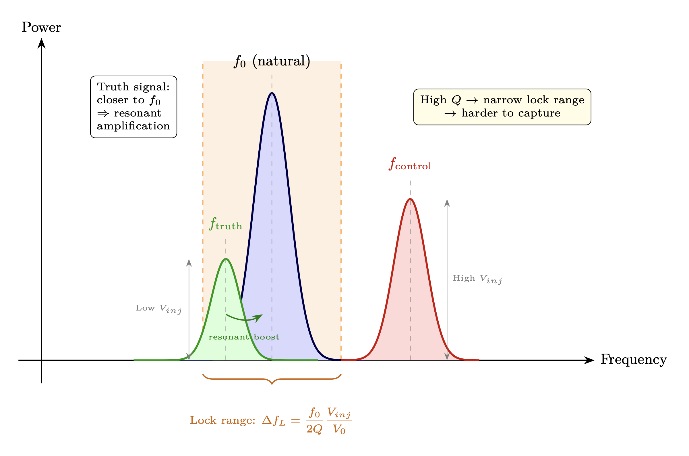

Chapter 9: Injection Locking and Perception Management
Control Mechanisms and Individual Sovereignty
KEY FINDINGS — Chapter 9: Injection Locking and Perception Management
Evidence-tier key: [L1] established/replicated evidence; [L2] grounded extension with moderate uncertainty; [L3] speculative hypothesis; [L4] conceptual/anecdotal.
- The Adler equation governs belief capture: lock bandwidth \(\propto 1/Q\), so higher quality factor (sovereignty) directly narrows vulnerability to narrative capture [L1]
- Competing injection model reveals a fundamental asymmetry: truth signals closer to natural frequency gain resonant amplification, requiring control signals to compensate with raw power [L1]
- Critical mass for narrative escape is \(f_c \approx \omega _{L,C}/(\omega _{L,C} + K_{mean}) \approx 37.5\%\), consistent with historical cascade evidence (30-40%) from Soviet dissolution, Berlin Wall, and social movements [L1-L2]
- Adaptive beamforming (MVDR/LMS) maps precisely to algorithmic content suppression, with documented platform behavior matching model predictions for adaptation rate and null steering [L1]
- Current population assessment: 30-40% firmly locked, 25-35% questioning, 15-25% unlocked, 5-10% never locked – with lock weakening due to trust collapse and rising network connectivity [L2-L3]
_________________________________
Epistemic note [L1-L3]: This chapter separates established RF dynamics (L1), model-dependent social mappings (L2), and speculative extension claims (L3). Use L1-L2 content for doctrine decisions; treat L3 content as hypothesis overlays requiring independent corroboration and explicit falsification checks.
9.1 RF Analogy Overview
9.1.1 What is Injection Locking?
In RF engineering, injection locking occurs when an oscillator is exposed to an external signal and synchronizes (locks) its frequency to that signal. The oscillator gives up its natural frequency and adopts the injected frequency. The torsion field substrate established in Chapter 0 provides the physical mechanism through which injection locking operates on consciousness.
This is not gradual tuning—it’s a phase transition. Below a certain injection power, the oscillator maintains its independence. Above that threshold, it suddenly locks to the external signal.
Key RF principle: A weak oscillator near a strong transmitter will be captured by the transmitter’s frequency. The oscillator doesn’t “choose” to synchronize—it’s compelled by the physics of coupling.
9.1.2 The Adler Equation
The foundational equation describing injection locking is the Adler equation (1946): \[ \frac {d\phi }{dt} = \Delta \omega - \frac {\omega _0}{2Q} \cdot \frac {V_{inj}}{V_0} \cdot \sin (\phi ) \] Where:
|
Variable | Description |
|
\(\phi \) | Phase difference between oscillator and injected signal |
|
\(\Delta \omega = \omega _{inj} - \omega _0\) | Frequency difference (detuning) |
|
\(\omega _0\) | Natural frequency of oscillator |
|
\(Q\) | Quality factor of oscillator |
|
\(V_{inj}\) | Injection signal amplitude |
|
\(V_0\) | Oscillator’s own amplitude |
9.1.3 Why This Maps to Belief Dynamics
Human beliefs are not static—they oscillate. Every person has:
- A natural frequency (intrinsic worldview, values, predispositions)
- An amplitude (how strongly they broadcast their beliefs)
- A characteristic impedance \(Z_0\) (depth of processing, visible impedance range)
- A quality factor Q = \(Z_0\)/R (sovereignty — resistance to capture)
External signals (media, institutions, social pressure) attempt to lock individuals to specific belief states. This is not persuasion through argument—it’s capture through injection locking, with lock bandwidth: \[ \Delta \omega _{lock} \propto \frac {R}{Z_0} = \frac {1}{Q} \] Higher Q = narrower lock bandwidth = harder to capture. Both increasing \(Z_0\) (depth of processing) and decreasing R (dissipation) contribute to raising Q.
The model explains:
- Why high-powered narratives capture populations (they widen lock bandwidth)
- Why some individuals resist while others succumb (Q differences, driven by both \(Z_0\) and R)
- How escape from narrative lock occurs (Q increase — via \(Z_0\)\(\uparrow \) or R\(\downarrow \) — shrinks lock bandwidth)
- The role of “awakened seeds” in triggering cascade unlocking (high-Q individuals escape first)
9.1.4 Adaptive Beamforming Overview
While injection locking describes how individual oscillators are captured, adaptive beamforming describes how control systems dynamically manage the collective:
Adaptive beamforming dynamically adjusts antenna array weights to maximize signal in desired directions while placing nulls (zeros) toward interference. The array continuously adapts—tracking desired signals, suppressing jammers, responding in real-time.
Perception management is adaptive beamforming of collective consciousness. The control system continuously adjusts weights—amplifying narratives that serve power, nulling information that threatens it.
This section extends the individual injection locking model to the system-level control architecture, showing how both mechanisms work together: injection locking captures individual oscillators, while adaptive beamforming steers the collective array.
_________________________________
9.2 Mathematical Model

9.2.1 Core Dynamics: Single Oscillator
The Adler equation in normalized form: \[ \frac {d\phi }{dt} = \Delta \omega - \omega _L \sin (\phi ) \] Where the locking bandwidth is: \[ \omega _L = \frac {\omega _0}{2Q} \cdot \frac {V_{inj}}{V_0} \] ### 9.2.2 Locking Condition
For stable lock (constant \(\phi \)): \[ \frac {d\phi }{dt} = 0 \implies \sin (\phi ) = \frac {\Delta \omega }{\omega _L} \] This has a solution only when: \[ \left |\Delta \omega \right | \leq \omega _L \] Therefore, the locking range is: \[ \boxed {\Delta \omega _{lock} = \pm \frac {\omega _0}{2Q} \cdot \frac {V_{inj}}{V_0}} \] Physical interpretation:
- Locking range \(\propto \) injection power (\(V_{inj}\))
- Locking range \(\propto \) 1/Q = R/\(Z_0\) (low-Q oscillators are easier to capture)
- Locking range \(\propto \) \(\omega _0\) (faster oscillators have wider locking bands)
Key insight: Since Q = \(Z_0\)/R, capture vulnerability decreases when either \(Z_0\) increases (deeper processing via L\(\uparrow \) or C\(\downarrow \)) or R decreases (less dissipation via meditation, attention discipline). Both paths raise Q and narrow the locking range.
9.2.3 Social Mapping of Parameters
|
RF Term | Symbol | Social Mapping | Interpretation |
|
Natural frequency | \(\omega _0\) | Intrinsic belief tuning | Your “native” channel before external influence |
|
Characteristic impedance | \(Z_0 = \sqrt {L/C}\) | Depth of processing | Visible impedance range—determines perceptible density tiers |
|
Quality factor | \(Q = Z_0/R\) | Sovereignty / lock resistance | Primary development measure—harder to capture; Q \(\propto \) \(Z_0\)/R |
|
Injected frequency | \(\omega _{inj}\) | Narrative frequency | The belief state the external signal tries to impose |
|
Frequency offset | \(\Delta \omega \) | Belief distance | How far the narrative is from your natural position |
|
Injection amplitude | \(V_{inj}\) | Media/institutional power | Broadcast strength of narrative source |
|
Oscillator amplitude | \(V_0\) | Individual signal strength | Personal influence, platform, inner conviction |
|
Phase | \(\phi \) | Current belief state | Where you are in the belief cycle |
|
Locking range | \(\Delta \omega _L \propto R/Z_0\) | Capture bandwidth | Range of beliefs you’re susceptible to—inversely proportional to Q |
Critical insight: Lock bandwidth \(\propto \) R/\(Z_0\) = 1/Q. Raising Q narrows your capture range. Three pathways: increase \(Z_0\) through wisdom (L\(\uparrow \)) or shadow work (C\(\downarrow \)), or reduce R through meditation and attention discipline. See Ch 5 Section 2 for R definition and its role in Q.
9.2.4 Dynamics in Different Regimes
9.2.4.1 Locked State (\(|\Delta \omega | < \omega _L\)) The oscillator phase-locks to the injection. Phase stabilizes at: \[ \phi _{locked} = \arcsin \left (\frac {\Delta \omega }{\omega _L}\right ) \] In social terms: Individual’s beliefs synchronize with the external narrative. They may feel this is their “own” belief, but it’s entrained.
9.2.4.2 Unlocked State (\(|\Delta \omega | > \omega _L\)) The oscillator beats against the injection. Phase continuously slips: \[ \phi (t) \approx \sqrt {\Delta \omega ^2 - \omega _L^2} \cdot t + \phi _0 \] Average beat frequency: \[ \omega _{beat} = \sqrt {\Delta \omega ^2 - \omega _L^2} \] In social terms: Individual maintains independent oscillation but is perturbed. Experiences cognitive dissonance as their beliefs cycle relative to dominant narrative.
9.2.4.3 Capture and Release Transitions Capture occurs when:
- 1.
- Injection power \(V_{inj}\) increases (media saturation)
- 2.
- Oscillator power \(V_0\) decreases (isolation, demoralization)
- 3.
- \(Z_0\) decreases / Q decreases (trauma increases C, stress increases R)
- 4.
- \(\Delta \omega \) decreases (narrative shifts toward you)
Release (escape from lock) occurs when:
- 1.
- Injection power decreases (narrative loses credibility)
- 2.
- Oscillator power increases (community support, inner work)
- 3.
- \(Z_0\) increases (wisdom L\(\uparrow \), shadow work C\(\downarrow \)) \(\rightarrow \) Q = \(Z_0\)/R increases
- 4.
- R decreases (meditation, attention discipline) \(\rightarrow \) Q increases directly
- 5.
- Exposure to stronger counter-narrative (\(V_{truth} > V_{control}\))
The primary path to capture resistance is raising Q through three pathways: wisdom accumulation (L\(\uparrow \)), shadow integration (C\(\downarrow \)), and attention discipline (R\(\downarrow \)). All three narrow lock bandwidth via Q = \(Z_0\)/R.
9.2.5 Sovereignty as Lock Resistance: The Central Insight
The key equation for personal sovereignty: \[ \Delta \omega _{lock} = \frac {\omega _0}{2Q} \cdot \frac {V_{inj}}{V_0} = \frac {\omega _0 R}{2Z_0} \cdot \frac {V_{inj}}{V_0} \] Low locking bandwidth = personal sovereignty. This equation quantifies what wisdom traditions describe qualitatively.
|
Q Level | Components (\(Z_0\), R) | Lock Bandwidth | Meaning |
|
Low | Low \(Z_0\) and/or high R | Wide | Easily captured by any narrative within large range |
|
Medium | Moderate \(Z_0\), moderate R | Moderate | Vulnerable to strong narratives |
|
High | High \(Z_0\) and/or low R | Narrow | Only very powerful, very close signals can capture |
|
Very High | High \(Z_0\) and low R | Nearly zero | Effectively sovereign—immune to typical broadcast |
Why this matters for personal development:
- 1.
- High-Q individuals can’t be captured by typical narratives. The locking bandwidth is too narrow—most broadcast signals miss entirely. Both high \(Z_0\) (depth of processing) and low R (attention discipline) contribute to high Q.
- 2.
- This is WHY spiritual development protects against manipulation. It’s not mystical—it’s the mathematics of narrowing lock bandwidth.
- 3.
- “Red-pilling” vs “raising Q”:
- Red-pilling = temporary escape from one lock (may just lock to different narrative)
- Raising Q = permanent immunity via narrower lock bandwidth (\(Z_0\)\(\uparrow \) and/or R\(\downarrow \))
- 4.
- Sovereignty IS the inverse of lock bandwidth: \[ \text {Sovereignty} \propto \frac {1}{\Delta \omega _{lock}} \propto Q \propto \frac {Z_0}{R} \] Connection to Phased Array (Ch 8):
Control systems need to lock array elements to steer the collective beam. If individuals have high Q:
- Their lock bandwidth is too narrow for broadcast capture
- They maintain independent oscillation
- They can seed counter-coherence in neighbors
- The collective beam cannot be steered by injection
This explains why sovereignty suppression is priority #1 for control systems. Lower the population’s Q (by suppressing \(Z_0\) or increasing R) \(\rightarrow \) widen lock bandwidth \(\rightarrow \) easier capture \(\rightarrow \) steerable array.
How Q gets suppressed:
- Trauma increases C \(\rightarrow \) lowers \(Z_0\) \(\rightarrow \) lowers Q
- Distraction increases R \(\rightarrow \) lowers Q directly
- Fragmented wisdom prevents L accumulation \(\rightarrow \) lowers \(Z_0\) \(\rightarrow \) lowers Q
- Fear states increase both R and C \(\rightarrow \) lowers Q through both pathways
How to raise Q:
- Wisdom accumulation (L\(\uparrow \)) through study, experience integration, contemplation \(\rightarrow \) raises \(Z_0\) \(\rightarrow \) raises Q
- Shadow work (C\(\downarrow \)) through trauma processing, emotional integration \(\rightarrow \) raises \(Z_0\) \(\rightarrow \) raises Q
- Reduced distraction (R\(\downarrow \)) through meditation, attention discipline \(\rightarrow \) raises Q directly
- Community (coupling) with other high-Q individuals provides mutual support
9.2.6 Network of Coupled Oscillators
For a population of N coupled oscillators, each with injection: \[ \frac {d\phi _n}{dt} = \omega _n + \sum _{m \neq n} K_{nm} \sin (\phi _m - \phi _n) + \omega _{L,n} \sin (\phi _{inj} - \phi _n) + \xi _n \] Where:
| Variable | Description |
| \(K_{nm}\) | Coupling strength between oscillators n and m |
| \(\omega _{L,n}\) | Individual locking bandwidth |
| \(\phi _{inj}\) | Phase of injected narrative |
| \(\xi _n\) | Noise term |
This combines:
- Kuramoto dynamics (mutual synchronization)
- Injection locking (external narrative capture)
- Stochastic perturbation (random events)
9.2.7 Competing Injections
When two signals compete (truth vs. control): \[ \frac {d\phi }{dt} = \Delta \omega - \omega _{L,C} \sin (\phi - \phi _C) - \omega _{L,T} \sin (\phi - \phi _T) \] The oscillator locks to whichever signal has:
- 1.
- Higher effective locking bandwidth (\(\omega _L\))
- 2.
- Closer natural frequency (smaller \(|\Delta \omega |\))
Critical insight: A weaker but more resonant signal can win.
If \(V_{truth} < V_{control}\) but \(|\omega _0 - \omega _{truth}| \ll |\omega _0 - \omega _{control}|\): \[ \omega _{L,T} \cdot \cos (\phi - \phi _T) > \omega _{L,C} \cdot \cos (\phi - \phi _C) \] The truth signal captures despite lower power because it’s closer to natural frequency.
9.2.7.1 How Q Affects Signal Competition When multiple signals compete for an oscillator’s lock, Q determines not just resistance but discrimination quality:
|
Q Level | Behavior Under Competing Signals |
|
Very Low | Locks to loudest signal regardless of resonance; no discrimination |
|
Low | Locks to strongest signal; slight preference for closer frequency |
|
Medium | Begins discriminating; resonance and power both matter significantly |
|
High | Strong frequency discrimination; locks only to highly resonant signals |
|
Very High | Effectively filters all but near-exact frequency matches; immune to brute-force power |
Key insight: High-Q individuals don’t just resist capture — they discriminate better between signals. This is qualitatively different from mere stubbornness. A high-Q oscillator can distinguish a coherent, resonant signal from a powerful but off-frequency one, making it both harder to capture and more responsive to truth.
9.2.7.2 Depth of Processing and Signal Discrimination \(Z_0\) specifically affects depth of processing — the ability to detect structure, coherence, and impedance mismatches in incoming signals. Even within the lock bandwidth (where capture is mathematically possible), high-\(Z_0\) oscillators exhibit what might be called “signal intelligence”:
- They detect internal incoherence in narratives (impedance mismatch between signal components)
- They perceive deeper harmonic structure — whether a signal carries genuine information or is merely powerful
- They register subtle frequency differences that low-\(Z_0\) oscillators cannot resolve
This means \(Z_0\) and R contribute to sovereignty through different mechanisms: \(Z_0\) provides perceptual depth (seeing through signals), while low R provides stability (not being swept along). Both feed into Q, but they protect through complementary pathways.
9.2.7.3 Natural Frequency and Truth Resonance A fundamental asymmetry in the competing injection model: truth tends to be closer to natural frequency than control signals.
This asymmetry is an assumption of the model: we define “truth” as the signal closer to the oscillator’s natural frequency, and “control” as the signal pushing away from it. The mathematical framework does not inherently distinguish truth from control – the asymmetry is imposed by the physical assumption that unperturbed oscillators tend toward their natural frequency.
Control narratives, by definition, push oscillators away from their natural state toward an imposed frequency. This means: \[ \left |\omega _0 - \omega _{truth}\right | < \left |\omega _0 - \omega _{control}\right | \] The mathematical consequence is that truth signals gain an effective power boost through resonance proximity, while control signals must overcome a larger detuning gap. For the control signal to maintain lock, it must satisfy: \[ \omega _{L,C} > \omega _{L,T} + |\omega _{control} - \omega _{truth}| \cdot Q / \omega _0 \] This is the mathematical basis for “truth resonates”: it’s not a metaphor but a consequence of the injection locking equations. The advantage is amplified in high-Q individuals, who are sensitive to small frequency differences and thus experience even stronger preferential coupling to resonant (truthful) signals.
9.2.7.4 Competing Injections in the Modern Information Environment The modern environment differs from historical eras by presenting multiple simultaneous injection sources — institutional media, social platforms, grassroots movements, algorithmic feeds — each attempting lock at different frequencies and powers.
The generalized multi-signal equation: \[ \frac {d\phi }{dt} = \Delta \omega - \sum _k \omega _{L,k} \sin (\phi - \phi _k) \] In this multi-signal chaos, Q becomes even more critical:
- Low-Q oscillators lock to the loudest signal (highest \(\omega _{L,k}\)), regardless of resonance. They are swept by whichever source dominates their information environment.
- Medium-Q oscillators experience confusion and rapid switching between partial locks — the “information overwhelm” phenomenon.
- High-Q oscillators filter the noise and lock preferentially to the most resonant signal (smallest \(|\omega _0 - \omega _k|\)), effectively extracting signal from chaos.
This explains why increasing information volume without raising population Q leads to confusion rather than enlightenment — and why Q-building is the prerequisite for an informed populace, not merely access to information.
9.2.8 Beamforming Equations for Perception Management
While Sections 2.1-2.7 model individual capture, this section models system-level control using adaptive beamforming mathematics.
9.2.8.1 Beamforming Output Output of adaptive array: \[ y(t) = \mathbf {w}^H \mathbf {x}(t) \] Where:
| Variable | Description |
| \(\mathbf {x}(t)\) | input signals from all elements |
| \(\mathbf {w}\) | weight vector (complex gains) |
| \(^H\) | Hermitian transpose |
9.2.8.2 Minimum Variance Distortionless Response (MVDR) Optimal weights that minimize interference while preserving desired signal: \[ \mathbf {w}_{MVDR} = \frac {\mathbf {R}^{-1}\mathbf {a}(\theta _0)}{\mathbf {a}^H(\theta _0)\mathbf {R}^{-1}\mathbf {a}(\theta _0)} \] Where \(\mathbf {R}\) = covariance matrix, \(\mathbf {a}(\theta _0)\) = steering vector to desired direction.
In perception management: \(\theta _0\) = official narrative direction.
9.2.8.3 Direction of Arrival (DOA) Estimation Before nulling, the system must locate threats: \[ P(\theta ) = \frac {1}{\mathbf {a}^H(\theta )\mathbf {R}^{-1}\mathbf {a}(\theta )} \] Peaks indicate signal sources. This is surveillance—identifying which voices, platforms, and communities pose threats.
9.2.8.4 Null Steering Once located, nulls are steered toward threats: \[ \mathbf {w}^H \mathbf {a}(\theta _{null}) = 0 \] Implementation: deplatforming, algorithmic suppression, financial debanking, coordinated debunking.
9.2.8.5 Adaptation Rate The system must adapt faster than threats evolve: \[ \tau _{adapt} < \tau _{threat} \] If threats evolve faster than countermeasures, nulls miss and signals propagate.
Current environment: Viral spread (\(\tau _{threat} \sim \) hours) challenges adaptation (\(\tau _{adapt} \sim \) days-weeks).
9.2.8.6 Weight Update Algorithm (LMS) Least Mean Squares adaptation: \[ \mathbf {w}(n+1) = \mathbf {w}(n) + \mu \cdot e^*(n) \cdot \mathbf {x}(n) \] Where \(e(n)\) = error (difference from desired output), \(\mu \) = learning rate.
The system learns which signals to suppress based on deviation from narrative.
_________________________________
9.3 Assumptions & Limitations
9.3.1 Model Assumptions
- 1.
- Beliefs are oscillatory: Individual worldviews can be modeled as periodic functions. This assumes beliefs have cycles, not fixed points.
- 2.
- Coupling is sinusoidal: The sin(\(\phi \)) dependence assumes smooth, continuous belief influence. Sharp thresholds are not captured.
- 3.
- Single dominant frequency: Each individual has one primary “natural frequency.” In reality, people have multiple belief dimensions.
- 4.
- Additive injection: Multiple narratives add linearly. Non-linear interactions (reinforcement, interference) are simplified.
- 5.
- Time-invariant parameters: Q, \(V_0\), \(\omega _0\) are constant during simulation. Real people change these through experience.
9.3.2 Injection Locking Limitations
- 1.
- Multi-dimensional belief space: Real beliefs span many dimensions; this 1D model captures one axis at a time.
- 2.
- Discrete events not modeled: Sudden revelations, trauma, “red pill moments” are not captured by continuous dynamics.
- 3.
- Memory effects absent: Real humans have history-dependent responses; the model is memoryless. See Chapter 5 (Capacitance) for the memory mechanism via stored charge.
- 4.
- Network effects simplified: Full network topology effects (cascades, phase transitions) require more complex analysis. See Chapter 8 (Phased Array) for complete network-level analysis.
- 5.
- No cognitive processing: The model doesn’t distinguish between conscious processing and unconscious entrainment.
9.3.3 Beamforming Model Assumptions
- 1.
- Beamforming analogy applies: Perception management operates through mechanisms analogous to adaptive beamforming—main beam steering, null placement, and sidelobe control. This assumes that information control systems optimize a directional objective function, not merely suppress content.
- 2.
- Collective SNR is the relevant metric: The model assumes that collective perception depends on the signal-to-noise ratio at the population level, integrating individual Q factors (Chapter 5) and array gain (Chapter 8). Individual awareness matters only insofar as it contributes to collective SNR.
- 3.
- Adaptive algorithms converge: The LMS/MVDR models assume that control systems converge to effective suppression strategies. In practice, convergence may be disrupted by rapid information spread or high-Q nodes that resist null placement.
- 4.
- Linear superposition of narratives: Multiple narrative sources combine linearly at the population level. Non-linear effects (narrative synergy, cognitive dissonance cascades) are not captured.
9.3.4 Beamforming Limitations
- 1.
- Static threat model: The model treats narrative threats as fixed signal sources. In practice, counter-narrative strategies evolve, with sources adapting to avoid null placement (frequency hopping, platform migration).
- 2.
- No cognitive modeling: The beamforming analogy captures information-space dynamics but does not model individual cognitive processing, emotional responses, or meaning-making that mediate between information exposure and belief formation.
- 3.
- Homogeneous population response: The model assumes uniform susceptibility across the population. Real populations have heterogeneous Q distributions, information diets, and cognitive profiles that produce varied responses to the same narrative environment.
- 4.
- Binary signal classification: The model classifies signals as “main beam” (approved narrative) or “interference” (suppressed). Real information environments contain gradients of acceptability and complex interactions between partially-approved narratives.
9.3.5 Falsification Conditions
The model would be falsified by:
- 1.
- Populations that never lock despite saturation: If extremely high-powered narratives consistently fail to capture populations.
- 2.
- High-Q individuals easily captured: If discerning, aware individuals lock as easily as distracted ones.
- 3.
- No threshold effects: If belief capture is purely proportional to exposure rather than showing phase-transition behavior.
- 4.
- Counter-narratives never succeed: If lower-power truth signals cannot compete regardless of resonance.
_________________________________
9.4 Predictions & Thresholds
9.4.1 Individual Locking Predictions
Prediction 1: Locking range scales with power differential \[ \Delta \omega _{lock} \propto \frac {V_{inj}}{V_0} \] Test: Measure belief change vs. media exposure intensity. Should show widening capture range with intensity.
Prediction 2: High-Q individuals have narrow locking ranges
Trained contemplatives, critical thinkers, and the “naturally immune” should show:
- Resistance to narrative capture
- Quick escape from lock when alternative signals available
- Stable independent oscillation
Prediction 3: Lock is binary, not gradual
Individuals either lock completely or maintain independent oscillation. Partial lock is unstable (beat frequency regime).
9.4.2 Network Cascade Predictions
Prediction 4: Critical mass for narrative escape
When fraction \(f_c\) of population escapes lock, cascade release begins: \[ f_c \approx \frac {\omega _{L,C}}{\omega _{L,C} + K_{mean}} \] Where \(K_{mean}\) is mean coupling strength.
Justification for \(\omega _{L,C} = 0.3\):
- Propaganda studies consistently show ~30-40% of a population is movable on any given issue through sustained media campaigns
- The Overton window on most policy dimensions spans roughly 30% of the full ideological spectrum
- Normalizing to a belief-space range of 1.0, this gives \(\omega _{L,C} \approx 0.3\) as the effective institutional locking bandwidth
Justification for \(K_{mean} = 0.5\):
- The two-step flow model (Katz & Lazarsfeld, 1955) demonstrated that personal influence is roughly comparable to or stronger than institutional media in shaping opinion
- \(K_{mean} = 0.5\) vs \(\omega _{L,C} = 0.3\) reflects peer influence being somewhat stronger than institutional injection, consistent with this finding
- The critical ratio \(\omega _{L,C} / (\omega _{L,C} + K_{mean})\) is robust to proportional scaling of both parameters
Sensitivity note: \(f_c\) ranges from 50% (no coupling, \(K = 0\)) to 0% (infinite coupling). The value of 37.5% is consistent with historical observations of ~30-40% critical mass preceding narrative collapses (see Section 9.5.4 cascade evidence).
For typical parameters (\(\omega _{L,C} = 0.3\), \(K_{mean} = 0.5\)): \[ f_c \approx \frac {0.3}{0.8} = 37.5\% \] Test: Historical narrative collapses should show ~30-40% critical mass before sudden shift.
Prediction 5: High-Q seeds trigger cascades
Individuals with high Q (narrow locking range) can:
- 1.
- Escape lock first
- 2.
- Inject counter-signal to neighbors
- 3.
- Help others escape through coupling
The “awakened seeds” effect: A small population of high-Q individuals can trigger population-wide escape if: \[ N_{seeds} \cdot V_{seeds} > N_{locked} \cdot \omega _{L,C} / K \] ### 9.4.3 Competing Narrative Predictions
Prediction 6: Coherence beats power
A coherent (phase-aligned) truth signal can overcome a more powerful but incoherent control signal if: \[ V_{truth} \cdot r_{truth} > V_{control} \cdot r_{control} \] Where \(r\) is the coherence (order parameter) of each signal source.
Prediction 7: Resonance amplifies weak signals
A truth signal close to population’s natural frequency gains effective power boost: \[ V_{eff} = V_{truth} \cdot \left (1 + Q_{pop} \cdot \frac {\Delta \omega _{control}}{\Delta \omega _{truth}}\right ) \] This is a linearized approximation valid near resonance; the exact gain follows the standard resonance curve \(V_{eff} = V_{truth} / \sqrt {1 + Q^2(\omega /\omega _0 - \omega _0/\omega )^2}\).
When \(\Delta \omega _{truth} \ll \Delta \omega _{control}\), even weak truth signals dominate.
9.4.4 Control System Predictions
Prediction 8: Mainstream narrative should be consistent (main beam aimed at one direction).
Prediction 9: Threatening sources should experience coordinated suppression (null steering).
Prediction 10: New threat sources should face delay before suppression (DOA estimation time).
Prediction 11: Suppression should be proportional to threat level.
Prediction 12: The system should show learning—repeated patterns get faster response.
9.4.5 Collective Coherence Predictions
Prediction 13: Groups composed of meditators in measured coherent states should produce stronger collective effects (measured via environmental random number generator deviation, shared physiological entrainment, etc.) than equally-sized groups of non-meditators, by a factor approximating the average Q ratio.
Prediction 14: The critical mass threshold for collective effects (from Chapter 8) should be lower when participants have higher individual Q — fewer high-Q people are needed than low-Q people to achieve the same collective beam strength.
9.4.6 Threshold Summary Table
|
Threshold | Condition | Population Effect |
|
Individual lock | \(\|\Delta \omega \| < \omega _L\) | Person captured by narrative |
|
Individual escape | \(V_{counter} > V_{current}\) | Person releases from lock |
|
Cascade initiation | \(f_{unlocked} > f_c\) | Narrative begins collapsing |
|
Complete release | \(K_{mean} > \omega _L\) | Coupling overwhelms injection |
|
Permanent capture | \(Q_{pop} \to 0\) | Population cannot escape |
_________________________________
9.5 Evidence Synthesis
9.5.1 Injection Power Evidence
Media Concentration Studies Media Ownership Consolidation (1983-2023)
- 1983: 50 companies controlled 90% of US media
- 2023: 6 companies control 90% of US traditional broadcast/print media (Comcast, Disney, ViacomCBS, Warner, Fox, News Corp). The digital/social media landscape has different concentration patterns, though platform companies (Google, Meta, Apple) represent comparable or greater concentration in information distribution.
- Fewer sources = higher per-source power (\(V_{inj}\)\(\uparrow \)) = wider locking range
Propaganda Saturation Research
|
Metric | Historical | Current | Change |
|
Daily media exposure | 5 hours (1970) | 12+ hours (2023) | +140% |
|
Information sources used | 3-5 | 1-2 (algorithmically curated) | -60% |
|
Ad exposure/day | 500 (1970) | 5,000+ (2023) | +900% |
Information Environment Measurements Echo chamber studies (Bakshy, 2015)
- Social media users predominantly see agreeing viewpoints
Agenda-setting research
- Media doesn’t tell people what to think but what to think about
Overton window manipulation
- Constant exposure shifts perception of acceptable discourse
Interpretation
- Media consolidation directly increases \(V_{inj}\) in the Adler equation: \(\omega _L = \frac {\omega _0}{2Q} \cdot \frac {V_{inj}}{V_0}\) — fewer, more powerful sources widen the locking range for entire populations
- The 10\(\times \) increase in daily media exposure (5\(\rightarrow \)12+ hours) combined with algorithmic curation represents a dramatic increase in effective injection duty cycle — sustained injection maintains lock more reliably
- Echo chambers reduce effective \(\Delta \omega \) (belief distance) by filtering out competing signals, making the locking condition \(|\Delta \omega | < \omega _L\) easier to satisfy even with moderate injection power
9.5.2 Locking Range Evidence
Attitude Change Research Elaboration Likelihood Model (Petty & Cacioppo)
- Low-involvement audiences susceptible to peripheral cues (repetition, authority)
Mere exposure effect (Zajonc)
- Familiarity increases liking—explains repetition strategy
Inoculation theory (McGuire)
- Pre-exposure to weak counterarguments increases resistance
Interpretation
- The Elaboration Likelihood Model maps directly to Q: low-involvement (low-Q) audiences are captured through peripheral cues (high \(\omega _L\) from repetition/authority), while high-involvement (high-Q) audiences require central-route processing (signal must be close to \(\omega _0\) to achieve lock)
- Mere exposure increasing liking is the injection locking mechanism in its simplest form: sustained \(V_{inj}\) at constant frequency gradually captures oscillators within the locking range
- Inoculation theory corresponds to temporarily raising Q through pre-exposure: weak counterarguments activate critical processing (R\(\downarrow \), effective Q\(\uparrow \)), narrowing lock bandwidth before the main injection arrives
|
Population | Locking Resistance | Factors |
|
High education | Higher | Better critical evaluation |
|
High need for cognition | Higher | Evaluates arguments not cues |
|
Strong prior attitudes | Higher | Larger \(\Delta \)\(\omega \) from narrative |
|
High anxiety | Lower | Q drops under stress |
Classic Social Psychology Experiments Milgram obedience experiments (1963)
- ~65% of participants administered maximum “shock” under authority instruction — a data point for locking bandwidth under authority injection (\(V_{inj}\) from perceived legitimate authority)
Asch conformity experiments (1951)
- 75% of participants conformed at least once to an obviously wrong group answer — demonstrates peer coupling (\(K\)) contribution to effective locking range
Festinger’s cognitive dissonance (1957)
- The discomfort of holding contradictory beliefs maps directly to the beat frequency regime: an unlocked state where the oscillator beats against the injected signal, producing psychological distress until the individual either locks or moves further away
Cult Deprogramming Literature Hassan’s BITE Model
- Behavior, Information, Thought, Emotional control
Exit patterns
- Sudden vs. gradual awakening (phase transition signature)
Key factors in escape
- Exposure to counter-information, supportive community, emotional exhaustion of cult
9.5.3 Q Factor Evidence
Mindfulness and Resistance to Manipulation Farias (2016)
- Meditators show reduced susceptibility to anchoring bias
Kiken & Shook (2011)
- Brief mindfulness reduces automatic biases
Interpretation
- Mindfulness raises Q by increasing awareness of manipulation attempts
Education and Critical Thinking Effects
| Education Level | Narrative Resistance | Notes |
| Less than high school | Baseline | High susceptibility |
| High school | +10% resistance | Some critical skills |
| College | +25% resistance | Exposure to debate |
| Graduate | +35% resistance | Research training |
Note: Elite education may lock to elite narratives (different \(\omega \), still locked).
Contemplative Practice Outcomes Davidson (2003)
- Long-term meditators show altered default mode activity
Killingsworth & Gilbert (2010)
- Mind-wandering associated with unhappiness; meditation reduces wandering
Interpretation
- Practice literally changes Q factor—higher Q = narrower locking, harder to capture
Dual-Process Cognition Kahneman, System 1 vs System 2 (2011)
- System 1 (fast, heuristic, automatic) maps to low-Q processing: easily captured by peripheral cues, repetition, and authority signals
- System 2 (deliberate, effortful, analytical) maps to high-Q processing: resistant to capture, evaluates signal coherence before locking
- The “cognitive miser” tendency (defaulting to System 1) explains why baseline Q is low for most people in most contexts
Physiological Q Proxies Heart Rate Variability (HRV) research
- Higher HRV correlates with greater emotional regulation, stress resistance, and cognitive flexibility
- HRV may serve as a physiological proxy for Q: individuals with high HRV show greater resistance to impulsive entrainment and better discrimination between genuine and spurious signals
- Meditation and contemplative practices increase HRV, consistent with the Q-raising mechanism
9.5.4 Cascade Escape Evidence
Historical Narrative Collapses
|
Event | Years to Collapse | Tipping Point |
|
Soviet dissolution | 74 years \(\rightarrow \) 2 years | ~30% openly dissenting |
|
Berlin Wall fall | 40 years \(\rightarrow \) months | Mass protests |
|
#MeToo cascade | Decades \(\rightarrow \) weeks | Critical mass of stories |
|
COVID narrative shifts (e.g., lab leak hypothesis: dismissed 2020, accepted as plausible by 2023; mask efficacy: reversed multiple times) | Months | Accumulating contradictions |
- Long apparent stability
- Accelerating cracks
- Sudden collapse
- New equilibrium forms rapidly
- This pattern is a classic phase transition, not linear change
- Kuhn (1962) Normal science \(\rightarrow \) crisis \(\rightarrow \) revolution \(\rightarrow \) new normal
- Planck’s principle “Science advances one funeral at a time”
- Model prediction Paradigm lock maintained by locked population; when unlock threshold crossed, rapid cascade
Threshold and Contagion Models Granovetter’s threshold models (1978)
- Mathematical models of collective behavior where individuals have different thresholds for joining an action — directly parallel to the \(f_c\) critical mass prediction
- The distribution of individual thresholds determines whether cascades occur, matching the Q-distribution dependence of the injection locking model
Centola & Macy (2007)
- Complex contagion requires multiple exposures (reinforcement) before adoption, unlike simple contagion
- Maps directly to the coupling threshold \(K\): escape from narrative lock requires sufficient coupling from multiple unlocked neighbors, not just a single counter-signal
Interpretation
- Historical narrative collapses consistently show ~30-40% critical mass before sudden shift, matching the predicted \(f_c \approx \omega _{L,C}/(\omega _{L,C} + K_{mean}) \approx 37.5\%\) (Section 9.4.2)
- The “long stability \(\rightarrow \) accelerating cracks \(\rightarrow \) sudden collapse” pattern is the signature of a phase transition, not linear change — precisely what the Kuramoto-Adler coupled oscillator model predicts when unlock fraction crosses \(f_c\)
- Granovetter’s threshold distribution maps to the Q distribution in the population: high-Q individuals escape lock first (lowest threshold), seeding the cascade for progressively lower-Q neighbors
9.5.5 Competing Narrative Evidence
|
Conflict | Institutional Power | Grassroots Power | Outcome |
|
Iraq WMD narrative | Very high | Low | Institutional won (temporarily) |
|
Vaccine safety debates | Very high | Moderate | Ongoing contestation |
|
Election integrity 2020 | Very high | Moderate-high | Unresolved polarization |
|
UAP reality | Moderate | Growing | Shifting toward disclosure |
Grassroots vs. Institutional Messaging
- Arab Spring Social media enabled coordination despite state media control
- GME short squeeze Reddit coordinated against institutional finance
- Limitations Platforms can be captured, algorithms adjusted
- Rumor accuracy (Allport & Postman) Surprisingly accurate transmission under some conditions
-
Cascades require:
- 1.
- Credible initial source
- 2.
- Resonance with audience beliefs (small \(\Delta \)\(\omega \))
- 3.
- Network connectivity for coupling K
- 4.
- Low noise environment
Historical Case Studies of Resonance Overcoming Power Soviet samizdat literature
- Underground truth publications (\(V_{truth}\) far below state propaganda \(V_{control}\)) competed against massive institutional injection
- Resonance with lived experience (\(|\omega _0 - \omega _{truth}| \ll |\omega _0 - \omega _{control}|\)) gave samizdat effective power beyond its broadcast strength
- Eventually won through accumulated resonance as the gap between official narrative and reality widened
Galileo and heliocentrism
- Truth signal initially locked out by overwhelming institutional power (Church authority)
- Won through resonance with observational reality — the heliocentric model’s predictions matched telescope observations (small \(\Delta \omega _{truth}\)), while geocentric epicycles grew increasingly strained (large \(\Delta \omega _{control}\))
- Demonstrates that truth signals can survive indefinite power disadvantage when resonance is strong enough
Interpretation
- The competing injections equation \(\frac {d\phi }{dt} = \Delta \omega - \omega _{L,C} \sin (\phi - \phi _C) - \omega _{L,T} \sin (\phi - \phi _T)\) (Section 9.2.7) predicts that a weaker but more resonant signal can win — samizdat and Galileo cases confirm this: \(V_{truth} < V_{control}\) but \(|\omega _0 - \omega _{truth}| \ll |\omega _0 - \omega _{control}|\)
- Information warfare outcomes show that institutional power (\(V_{inj}\)) is necessary but not sufficient for maintaining lock — resonance with lived experience (\(\Delta \omega \)) determines long-term outcomes
- The modern multi-signal environment (Section 9.2.7.4) explains why information volume without Q increase produces confusion: low-Q oscillators lock to the loudest signal, medium-Q oscillators experience rapid switching, and only high-Q oscillators extract signal from chaos
9.5.6 Control System Evidence
9.5.6.1 Algorithmic Manipulation
|
Study | Key Finding | Model Correspondence |
|
Epstein & Robertson (2015) | SEME can shift voting preferences 20%+ | DOA estimation + null steering in code |
|
Vorhies (2019) | Google internal “algorithmic unfairness” docs (Vorhies’s claims are based on documents he states he obtained internally; independent verification has been limited) | Manual intervention = weight adjustment |
|
Haugen (2021) | Facebook algorithm amplifies engagement/outrage | LMS optimization for engagement signal |
Model correspondence: Algorithmic bias implements the DOA estimation (Section 9.2.8.3) and null steering (Section 9.2.8.4) functions — surveillance identifies threat sources, then ranking/visibility adjustments place nulls.
9.5.6.2 Coordinated Suppression
|
Target | Timing | Platforms | Model Correspondence |
|
Alex Jones (2018) | 24 hours | Apple, FB, YT, Spotify | \(\tau \)_adapt < \(\tau \)_threat achieved |
|
David Icke (2020) | 48 hours | YT, FB, Twitter | Cross-platform coordination |
|
COVID skeptics (2020-21) | Rolling | All major | LMS learning from prior actions |
|
Andrew Tate (2022) | 72 hours | YT, FB, IG, TikTok | Predictive category nulling |
Model correspondence: Coordinated deplatforming within 24-72 hours demonstrates achieved adaptation rate (Section 9.2.8.5). Rolling enforcement shows LMS weight updates (Section 9.2.8.6) learning from prior actions. Whether cross-platform synchronization reflects centralized coordination, mimetic institutional behavior, or independent policy application is an open question. The model predicts the effect is functionally identical regardless of mechanism.
|
Organization | Major Funders | Model Correspondence |
|
PolitiFact | Poynter (Koch, Gates, Google) | Centralized steering vector |
|
FactCheck.org | Annenberg Foundation | Shared \(\theta \)_0 direction |
|
NewsGuard | Microsoft, Publicis | MVDR weight coordination |
|
AFP Fact Check | Agence France-Presse (state-affiliated) | Government steering input |
Model correspondence: IFCN network implements MVDR beamformer — shared funding = centralized control of steering vector a(\(\theta \)_0). Circular cross-referencing creates self-reinforcing covariance matrix R.
|
Update | Effect | Model Correspondence |
|
Medic (2018) | -80% alt health traffic | Null placement on category |
|
YMYL policy | Stricter “authority” standards | Domain-specific learning rate \(\mu \) |
|
Natural News | Near-zero visibility | Complete null: w^H a(\(\theta \)) \(\approx \) 0 |
Model correspondence: Algorithm updates implement LMS weight equation — each update adjusts weights based on error signal (deviation from desired narrative output).
9.5.7 Collective Coherence Evidence
9.5.7.1 Group Coherence Research
|
Study | Key Finding | Model Correspondence |
|
HeartMath group studies | Individual HRV coherence predicts group quality | G_gnosis \(\propto \) Q confirmed |
|
TM meditation research | Experienced meditators = stronger per-capita effects | Higher Q = more amplitude contribution |
Model correspondence: HRV coherence serves as proxy for resonance state. Finding that individual coherence predicts group coherence confirms |AF|\(^2\) \(\propto \) (f\(\cdot \)N\(\cdot \)Q_avg)\(^2\) dependence.
|
Study | Key Finding | Model Correspondence |
|
McGilchrist (2009) | Right-hemisphere = holistic; left = sequential | R-hemi = gnosis; L-hemi = ego mode |
|
Damasio (1994) | Somatic markers required for good decisions | Body-based resonance information essential |
Model correspondence: McGilchrist’s hemispheric distinction maps to resonance vs. off-resonance operation. Damasio confirms that purely analytical (ego) processing produces worse outcomes than integrated (gnosis) processing.
9.5.8 System Architecture Synthesis
The perception management system operates as a five-stage adaptive beamformer:
Stage 1 — Surveillance (DOA Estimation): Social media monitoring and search query analysis identify emerging information sources. This maps to the DOA estimation function P(\(\theta \)) = 1/[aH(\(\theta \))R{-1}a(\(\theta \))] — peaks indicate signal sources requiring classification.
Stage 2 — Threat Classification: AI systems and human review categorize sources by threat level (1-10 scale). Higher threat levels receive priority for null placement.
Stage 3 — Weight Calculation: Policy directives combined with algorithmic optimization determine response intensity. This implements the MVDR weight calculation w_MVDR = R^{-1}a(\(\theta \)_0) / [aH(\(\theta \)_0)R{-1}a(\(\theta \)_0)].
Stage 4 — Null Steering: Suppression mechanisms execute — deplatforming, ranking demotion, fact-check labels, financial debanking. This implements the null constraint w^H a(\(\theta \)_null) = 0.
Stage 5 — Output: The filtered information environment reaches the population, with main beam pointed at approved narratives and nulls placed toward threats.
Current adaptation gap: System adaptation (\(\tau \)_adapt ~ days-weeks) struggles against viral spread (\(\tau \)_threat ~ hours). Response: predictive nulling of categories rather than individual items.
Emerging failure modes: (1) Whack-a-mole problem — too many sources; (2) Streisand effect — suppression draws attention; (3) Platform alternatives — Telegram, Rumble reduce null effectiveness; (4) Credibility loss — fact-checker trust declining.
9.5.9 Synthesis: Current Locking State Assessment
Population Segments The following estimates are the author’s assessment informed by media trust survey trends (Gallup media confidence, Edelman Trust Barometer) mapped to locking-state categories. They are not direct measurements of “locking state” and should be treated as order-of-magnitude indicators.
|
Segment | Estimated % | Locking State | Primary Lock |
|
Firmly locked to mainstream | 30-40% | Stable lock | V_inj dominates |
|
Questioning but locked | 25-35% | Unstable lock | Near transition |
|
Actively unlocked | 15-25% | Independent oscillation | Counter-narrative |
|
Never locked | 5-10% | Always independent | High Q outliers |
- Historical: Near-universal lock (pre-internet)
- Current: Fragmenting, contested
-
Trend: Lock weakening due to:
- Declining V_inj effectiveness (trust collapse)
- Rising V_counter (alternative media)
- Increasing K (network connectivity)
- Rising average Q (meditation, awareness trends)
- Current estimate: 20-30% unlocked
- Cascade threshold: ~35-40%
- Timeline: Years, not decades (at current trajectory)
_________________________________
9.5.10 Source Mapping and Uncertainty Bands for Key Numeric Claims
The chapter’s aggregate percentages and thresholds are modeled assessments, not direct locking-state measurements. Treat them as scenario bands with explicit uncertainty:
|
Quantity | Central Estimate | Uncertainty Band | Basis |
|
Firmly locked segment | 35% | 30-40% | Media trust and narrative-alignment survey trends |
|
Questioning but still locked | 30% | 25-35% | Mixed-attitude cluster in longitudinal polling |
|
Actively unlocked | 20% | 15-25% | Alternative media adoption and self-report autonomy indicators |
|
Never locked outliers | 7% | 5-10% | Persistent low-conformity subgroup estimates |
|
Cascade onset threshold | 37.5% | 35-40% | Coupled-oscillator transition heuristic |
Confidence labeling:
- High: directly measured variable with repeated instrumentation.
- Medium: directly measured proxy mapped to model state.
- Low: inferred state without direct lock-state instrumentation.
Current chapter labels for these values: Low-Medium confidence. Use for planning ranges, not point forecasts.
_________________________________
Evidence Synthesis
- Detailed source sections: 9.5, 9.5.1, 9.5.2, 9.5.3, 9.5.4, 9.5.5, 9.5.6, 9.5.7.
Assumptions
- Detailed source sections: 9.3, 9.3.1, 9.3.3.
Limitations
- Detailed source sections: 9.3, 9.3.2, 9.3.4.
Falsification
- Detailed source sections: 9.3.5.
Predictions
- Detailed source sections: 9.4, 9.4.1, 9.4.2, 9.4.3, 9.4.4, 9.4.5.
Strategic Relevance
Why It Matters
9.6.1 Defense Against Capture For individuals:
- 1.
- Raise \(Z_0\) through L\(\uparrow \): Wisdom accumulation, contemplative practice, integrated experience (\(\rightarrow \) raises Q)
- 2.
- Raise \(Z_0\) through C\(\downarrow \): Shadow work, trauma integration, releasing stored charge (\(\rightarrow \) raises Q)
- 3.
- Reduce R: Meditation reduces resistance/dissipation \(\rightarrow \) Q = \(Z_0\)/R increases
- 4.
- Increase V_0: Build platform, strengthen voice
- 5.
- Maintain awareness of natural state: Know your true beliefs (your \(f_0\))
- 6.
- Minimize exposure during low-Q states: Avoid media when traumatized, stressed, or depleted
For communities:
- 1.
- Create counter-injection: Coherent alternative narrative
- 2.
- Strengthen coupling K: Tight community bonds
- 3.
- Protect high-Q members: Shield awakened seeds who can trigger cascade
- 4.
- Provide escape bridges: Help locked members release through Q-building practices
9.6.2 Understanding Control Strategy The injection locking model reveals why control systems:
- 1.
- Maximize broadcast power: Higher \(V_{inj}\) = wider locking range
- 2.
- Repeat endlessly: Lock requires sustained injection
- 3.
- Attack Q-building practices: Discredit meditation, shadow work, wisdom traditions — suppressing these prevents Q from rising, keeping capture bandwidth wide
- 4.
- Increase trauma/shadow (C\(\uparrow \)): Unprocessed trauma lowers \(Z_0\), widens capture range
- 5.
- Isolate: Reduce coupling K so lock depends only on injection
- 6.
- Create fear/stress: Temporarily increases R, dropping Q = \(Z_0\)/R, enabling capture
- 7.
- Co-opt natural frequencies: Make narratives feel “natural”
9.6.3 Path to Mass Unlocking Based on model predictions:
- 1.
- Cultivate high-Q seeds (100s to 1000s of awakened individuals)
- 2.
- Build coherent counter-signal (truth with r > 0.5)
- 3.
- Strengthen network coupling (community bonds)
- 4.
- Wait for injection power drop (narrative crisis)
- 5.
- Trigger cascade when threshold reached (~30-40% unlocked)
The model predicts sudden, not gradual, collective escape from narrative lock.
_________________________________
What To Watch
-
- 3.
- Protect high-Q members: Shield awakened seeds who can trigger cascade
-
- 2.
- Build coherent counter-signal (truth with r > 0.5)
-
- 5.
- Trigger cascade when threshold reached (~30-40% unlocked)
Boundaries of Use
- Apply this chapter as model-conditional doctrine; treat speculative elements as hypothesis overlays.
9.6 References to Other Chapters
- Chapter 5 (RLC Circuit) Q = \(Z_0\)/R derivation; Q as primary sovereignty measure; \(Z_0\) as depth of processing
- Chapter 2 (Densities) Higher \(Z_0\) enables higher density access (depth of processing); Q = \(Z_0\)/R determines lock resistance and sovereignty
- Chapter 8 (Phased Array) Coherence effects that amplify counter-injection; Section 8.7 on element quality and collective beam strength
- Chapter 13 (Paradigm Shielding) How injection power is maintained at the system level
- Chapter 14 (Link Budget) Injection locking as component of total gain/loss
_________________________________
End of Chapter 9: Injection Locking and Perception Management